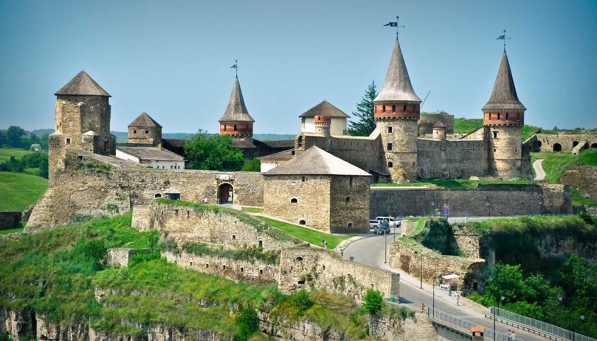
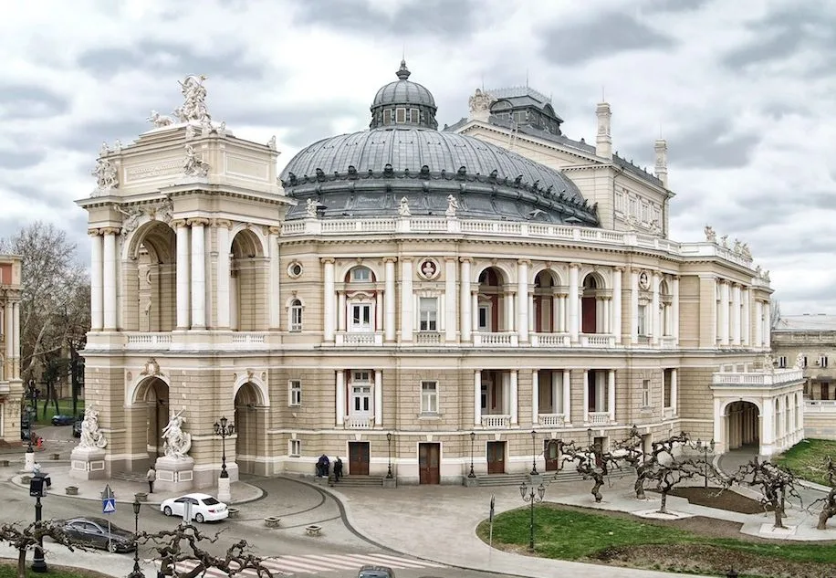

Визначні місця України
Відкрий для себе 10 перлин нашої історії та культури

Софійський собор
Символ вічності та духовності, заснований Ярославом Мудрим в XI столітті.
Читати далі →
Кам'янець-Подільська фортеця
Одна з найбільш неприступних фортець Східної Європи, побудована на скелі.
Читати далі →
Одеський оперний театр
Архітектурна перлина Одеси та один із найкрасивіших театрів світу.
Читати далі →Замок Паланок
Могутня фортеця на вулканічній горі, що зберігає таємниці середньовіччя.
Читати далі →Палац Шенборнів
Казковий замок з астрономічним секретом: 365 вікон та озеро у формі карти.
Читати далі →Острів Хортиця
Козацька столиця України, де оживає історія Запорозької Січі посеред могутнього Дніпра.
Читати далі →Аккерманська фортеця
Найбільша фортеця України, що береже історію від античних часів до середньовіччя.
Читати далі →Замок Любарта
Велична волинська фортеця, що прикрашає 200-гривневу купюру та зберігає пам'ять про князівські часи.
Читати далі →